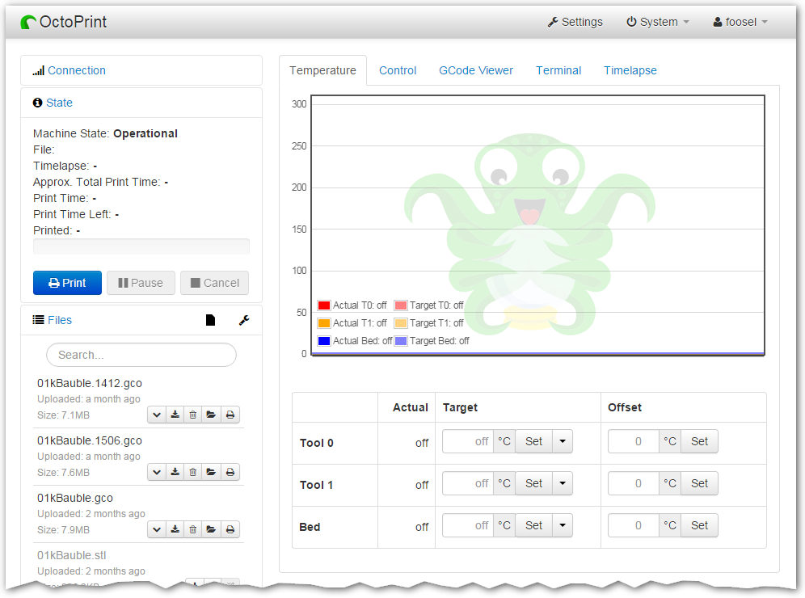

Welcome to OctoPuppet’s documentation!¶
Introduction to OctoPuppet¶
OctoPuppet is an OctoPrint-based web interface for controlling 3D printers. OctoPuppet relies heavily on the original OctoPrint, incorporating changes and features to better meet the institutional needs of libraries, makerspaces, and FabLabs with large user bases, multiple printers, and where prints need to be tracked on per-user basis. OctoPuppet uses FabApp (a separate project developed in the UTA FabLab; the source will be released publicly soon) as the backend to track users’ prints while keeping the many cool features of OctoPrint intact.
OctoPrint provides a snappy web interface for controlling consumer 3D printers. It is Free Software and released under the GNU Affero General Public License V3 .
Its website can be found at octoprint.org.
The community forum is available at community.octoprint.org.
The FAQ can be accessed by following faq.octoprint.org.
The official plugin repository can be reached at plugins.octoprint.org.
Important
OctoPrint’s development wouldn’t be possible without the financial support by its community. If you enjoy OctoPrint, please consider becoming a regular supporter!

You are currently looking at the source code repository of OctoPrint. If you already installed it (e.g. by using the Raspberry Pi targeted distribution OctoPi ) and only want to find out how to use it, the official documentation might be of more interest for you. You might also want to subscribe to join the community forum at community.octoprint.org where there are other active users who might be able to help you with any questions you might have.
Code documentation: